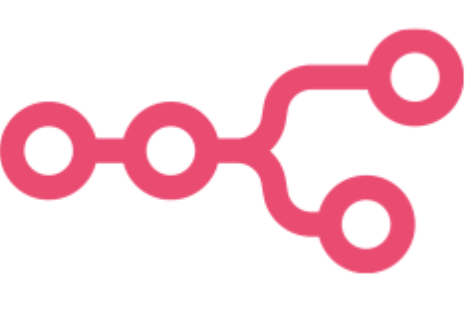
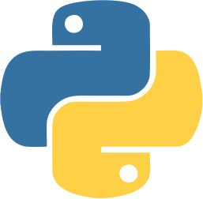
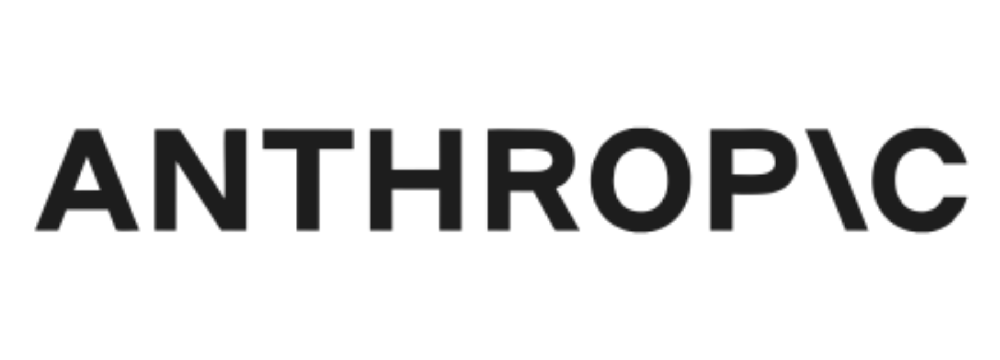
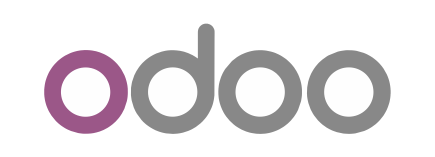
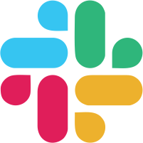
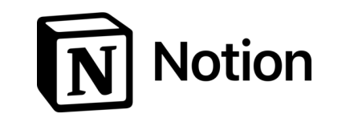
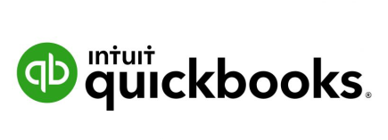
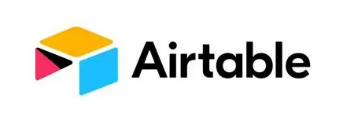

01 / DISCOVER
Understand the process
Map the current workflow, identify friction points, and understand what your team needs to keep control of.
Practical AI and automation that connects your tools, simplifies repetitive work, and gives your team more room to focus on what matters.
System overview
A connected business workflow
Capture
New request
Process
Organize data
Connect
Route the work
Complete
Next step ready
Review when it matters
Your tools stay in sync
Technology ecosystem
A flexible stack, selected for the work at hand.

n8n
Python

Systems, not slides
Good automation is more than a shortcut. It is a clear system for moving information, decisions, and follow-up through the tools your business already uses.
Monday / Operations
Receive
A request arrives through a form or inbox.
Organize
Details are checked and structured.
Route
The right person or system gets the task.
Follow up
A clear next action is recorded.
Human review stays in the loop
Add approval points wherever judgment or oversight is needed.
Connected by design
Connect the platforms your team relies on. Move information between tools, reduce manual handoffs, and keep the right people in the loop.
Explore an integration plan ↗Integration map · illustrative





Example app ecosystem. Final integrations depend on the client's supported platforms and access.
A thoughtful approach
The best solution is the one that fits the way your business actually operates—not the one with the most complicated tools.
01 / DISCOVER
Map the current workflow, identify friction points, and understand what your team needs to keep control of.
02 / DESIGN
Choose practical tools, define how information moves, and build in clear human review where it matters.
03 / IMPLEMENT
Validate the workflow with your team, improve the details, and make the system understandable to the people using it.
Let's make work flow
Tell us where work gets stuck. We can start with the process you have and explore what a more connected system could look like.